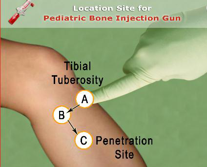

נתיב אוויר מתקדם
ופרמקולוגיה
אנטומיה · מנתב אוויר · אמבו ומסכה · אינטובציה · LMA · גישה תוך-גרמית · תרופות
Advanced Airway
& Pharmacology
Anatomy · OPA · BVM · intubation · LMA · IO access · drugs
מבוסס על חומרי MSR ("נתיב אוויר מתקדם", "גישה ורידית") ועל AHA PALS 2025.
מטרות הלמידה
בסיום המודול תוכלו
- להסביר את ההבדלים האנטומיים בנתיב האוויר של ילדים.
- להכניס מנתב אוויר ולהנשים נכון באמבו ומסכה.
- לחשב גודל טובוס ולוודא מיקום; לפתור תקלות לפי DOPE.
- להכיר LMA וגישה תוך-גרמית (IO).
- לדעת מינוני תרופות מרכזיים בהחייאה.
Objectives
By the end of this module you will be able to
- Explain the anatomic differences of the pediatric airway.
- Insert an OPA and ventilate correctly with a bag-mask.
- Calculate ETT size and confirm placement; troubleshoot with DOPE.
- Use an LMA and intraosseous (IO) access.
- Know key resuscitation drug doses.
אנטומיה
למה נתיב האוויר של ילד שונה
- דרכי אוויר קצרות וצרות יותר.
- הלארינקס בצורת משפך (הצר ביותר באזור הקריקואיד), בניגוד לצורה גלילית במבוגר.
- נתיב האוויר ממוקם גבוה וקדמי יותר.
- לשון ואפיגלוטיס גדולים יחסית.
- נטייה לברדיקרדיה במהלך פרוצדורות בנתיב האוויר — חַמְצֵן היטב.
Anatomy
Why a child's airway is different
- Airways are shorter and narrower.
- Funnel-shaped larynx (narrowest at the cricoid), unlike the cylindrical adult shape.
- Airway sits higher and more anterior.
- Relatively large tongue and epiglottis.
- Prone to bradycardia during airway procedures — oxygenate well.
מנתב אוויר ואמבו-מסכה
הבסיס: הנשמה בלתי פולשנית
מנתב אוויר אוראלי (OPA)
- למחוסר הכרה ללא Gag reflex.
- מדידה: מזווית הפה עד זווית הלסת (תנוך האוזן).
- אין להכניס בחשד לגוף זר; אל תדחק את הלשון אחורה.
טכניקת אמבו-מסכה
- אחיזת C-E: בוהן ואצבע (C) אוטמות מסכה, שלוש אצבעות (E) מרימות לסת.
- חבר חמצן עם שקית העשרה ← 100%.
- הנשמה עד התרוממות בית החזה בלבד, כ-1 שנייה.
OPA & bag-mask
The basics: non-invasive ventilation
Oral airway (OPA)
- For the unconscious without a gag reflex.
- Size: mouth corner to angle of jaw (earlobe).
- Don't insert if FB suspected; don't push the tongue back.
Bag-mask technique
- C-E grip: thumb & finger (C) seal the mask, three fingers (E) lift the jaw.
- Connect O₂ with reservoir → 100%.
- Ventilate to chest rise only, ~1 second.
אמצעי נתיב אוויר
פתיחת נתיב אוויר · אמבו-מסכה · גישה תוך-גרמית
Airway measures
Opening the airway · bag-mask · intraosseous access

פתיחת נתיב אוויר — הטיית ראש והרמת סנטר
Airway opening — head tilt–chin lift

הנשמה באמבו ומסכה (אחיזת C-E)
Bag-mask ventilation (C-E grip)

עירוי תוך-גרמי — מיקום (proximal tibia)
Intraosseous site (proximal tibia)
קצב הנשמות
המספרים עדכון 2025
| מצב | קצב |
|---|---|
| דופק קיים, נשימה לא מספקת | 20–30 לדקה — הנשמה כל 2–3 שניות |
| CPR ללא נתיב אוויר מתקדם | 15:2 (שני מטפלים) / 30:2 (מטפל יחיד) |
| CPR עם נתיב אוויר מתקדם | 20–30 לדקה (כל 2–3 שנ') תוך עיסויים רציפים |
שינוי 2025: קצב ההנשמה עלה ל-20–30 לדקה (במקום 8–10 לדקה הישן). הימנע מהנשמת יתר — היא פוגעת בתפוקת הלב.
Ventilation rates
The numbers 2025 update
| Situation | Rate |
|---|---|
| Pulse present, inadequate breathing | 20–30/min — 1 breath every 2–3 seconds |
| CPR without advanced airway | 15:2 (two rescuers) / 30:2 (single) |
| CPR with advanced airway | 20–30/min (q2–3 s) with continuous compressions |
2025 change: ventilation rate increased to 20–30/min (replacing the old 8–10/min). Avoid over-ventilation — it impairs cardiac output.
אינטובציה
גודל טובוס וּוידוא מיקום
חישוב גודל הטובוס
- ללא בלונית: גיל/4 + 4
- עם בלונית: גיל/4 + 3.5
- פרה-אוקסיגינציה ב-100% חמצן ~3 דק' לפני.
- להב מילר/מקינטוש; סרגל ברסלאו לפי גודל.
ווידוא מיקום
- אדים על הטובוס; התרוממות בית חזה.
- כניסת אוויר דו-צדית בריאות, ללא כניסה לקיבה.
- ETCO₂ / קפנוגרפיה.
- צילום חזה בשלב מאוחר יותר.
Intubation
Tube size & placement confirmation
ETT size calculation
- Uncuffed: age/4 + 4
- Cuffed: age/4 + 3.5
- Pre-oxygenate with 100% O₂ ~3 min first.
- Miller/Macintosh blade; length-based tape for sizing.
Confirm placement
- Mist on the tube; chest rise.
- Bilateral breath sounds, no gastric insufflation.
- ETCO₂ / capnography.
- Chest X-ray later.
התדרדרות במונשם
פתרון תקלות — DOPE
D
Displacement
תזוזת הטובוס — מחוץ לקנה או לברונכוס ימני.
O
Obstruction
חסימה — הפרשות, קינק או נשיכה.
P
Pneumothorax
חזה אוויר — בדוק התרוממות וכניסת אוויר דו-צדית.
E
Equipment
כשל ציוד — נתק מהמכונה, הנשם ידנית, ודא חמצן.
בילדים, חזה אוויר בלחץ לרוב אינו מתבטא בסטיית קנה או גודש ורידי צוואר — חשד קליני גבוה.
Deterioration in the intubated patient
Troubleshooting — DOPE
D
Displacement
Tube moved — out of trachea or into right bronchus.
O
Obstruction
Secretions, kink, or patient biting.
P
Pneumothorax
Check bilateral chest rise and air entry.
E
Equipment
Disconnect from vent, hand-ventilate, confirm O₂.
In children, tension pneumothorax usually does not show tracheal deviation or neck-vein distension — keep clinical suspicion high.
LMA וגישה תוך-גרמית
חלופות מהירות
LMA (מעל-גלוטי)
- יושב מעל מיתרי הקול; הכנסה עיוורת.
- גודל לפי משקל (כתוב על האריזה).
- ניתן להכניס ללא הפסקת עיסויים.
גישה תוך-גרמית (IO)
- מהירה ובטוחה; אותם מינונים כמו IV.
- אתר נפוץ: proximal tibia (1–2 ס"מ מתחת ומדיאלית ל-tibial tuberosity).
- שטוף 5–10 מ"ל לאחר כל תרופה. ניתן גם דם.
- קונטרה: שבר/מעיכה באזור, זיהום, Osteogenesis Imperfecta; אין שני ניסיונות באותה עצם.
LMA & intraosseous access
Rapid alternatives
LMA (supraglottic)
- Sits above the cords; blind insertion.
- Size by weight (printed on the package).
- Can be placed without interrupting compressions.
Intraosseous (IO) access
- Fast and safe; same doses as IV.
- Common site: proximal tibia (1–2 cm below & medial to the tibial tuberosity).
- Flush 5–10 mL after each drug. Blood can be given too.
- Contra: fracture/crush at site, infection, osteogenesis imperfecta; no 2nd attempt in same bone.
פרמקולוגיה
מינונים מרכזיים (IV/IO)
| תרופה | מינון | שימוש |
|---|---|---|
| Epinephrine | 0.01 מ"ג/ק"ג (1:10,000), מקס' 1 מ"ג, כל 3–5 דק' | דום לב, ברדיקרדיה |
| Amiodarone | 5 מ"ג/ק"ג בולוס (חזרה עד ×2, מקס' 300 מ"ג) | VF/pVT עמיד |
| Lidocaine | 1 מ"ג/ק"ג | חלופה ל-VF/pVT |
| Atropine | 0.02 מ"ג/ק"ג (מינ' 0.1, מקס' מנה 0.5 מ"ג) | ברדיקרדיה ואגאלית |
| Adenosine | 0.1 ← 0.2 מ"ג/ק"ג (מקס' 6 ← 12 מ"ג) | SVT |
| בולוס נוזלים | קריסטלואיד 20 מ"ל/ק"ג (דם 10 מ"ל/ק"ג) | הלם |
Pharmacology
Key doses (IV/IO)
| Drug | Dose | Use |
|---|---|---|
| Epinephrine | 0.01 mg/kg (1:10,000), max 1 mg, q3–5 min | Arrest, bradycardia |
| Amiodarone | 5 mg/kg bolus (repeat up to ×2, max 300 mg) | Refractory VF/pVT |
| Lidocaine | 1 mg/kg | Alternative for VF/pVT |
| Atropine | 0.02 mg/kg (min 0.1, max single 0.5 mg) | Vagal bradycardia |
| Adenosine | 0.1 → 0.2 mg/kg (max 6 → 12 mg) | SVT |
| Fluid bolus | Crystalloid 20 mL/kg (blood 10 mL/kg) | Shock |
סיכום
נקודות מפתח
- נתיב אוויר של ילד: צר, משפכי (קריקואיד), קדמי — נטייה לברדיקרדיה.
- אמבו-מסכה באחיזת C-E, חמצן 100%, התרוממות חזה בלבד.
- טובוס: ללא בלונית גיל/4+4; עם בלונית גיל/4+3.5; ווידוא ב-ETCO₂.
- התדרדרות במונשם ← DOPE. קצב הנשמה 2025: 20–30/דק'.
- IO = אותם מינונים כמו IV; אדרנלין 0.01 מ"ג/ק"ג.
Summary
Key take-aways
- Child's airway: narrow, funnel (cricoid), anterior — prone to bradycardia.
- Bag-mask with C-E grip, 100% O₂, chest rise only.
- ETT: uncuffed age/4+4; cuffed age/4+3.5; confirm with ETCO₂.
- Deterioration → DOPE. 2025 ventilation rate: 20–30/min.
- IO = same doses as IV; epinephrine 0.01 mg/kg.